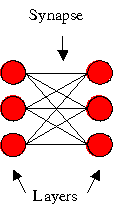
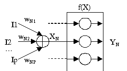
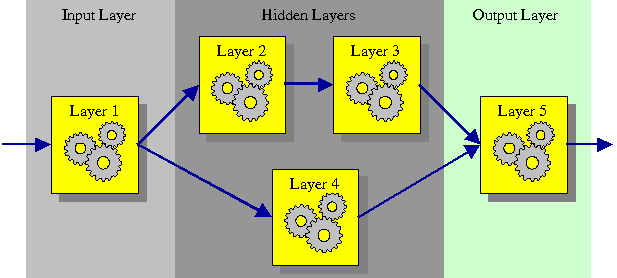

Basic Concepts
Each neural network (NN) is composed of a number of
components (layers) connected together by connections (synapses).
Depending on how these components are connected, several neural network
architectures can be created (feed forward NN, recurrent NN, etc).
This section deals with feed forward neural networks
(FFNN) for simplicity’s sake, but it is possible to build whatever
neural network architecture is required with Joone.
A FFNN is composed of a number of consecutive layers, each one
connected to the next by a synapse. Recurrent connections from a layer
to a previous one are not permitted. Consider the following figure:

This is a
sample FFNN with two layers connected with one synapse. Each layer is
composed of a certain number of neurons, each of which have the same
characteristics (transfer function, learning rate, etc).
A neural net built with Joone can be composed of whatever number of
layers of different kinds of layer.
Each layer processes its input signal by applying a transfer function
and sending the resulting pattern to the synapses that connect it to
the next layer. So a neural network can process an input pattern,
transferring it from its input layer to the output layer.
This is the basic concept upon which the entire engine is based.
The Transport Mechanism
To ensure that it is possible to build whatever neural network
architecture is required with Joone, a method to transfer the patterns
through the net is required without the need of a central point of
control.
To accomplish this goal, each layer of Joone is
implemented as a Runnable object, so each layer runs
independently from the other layers (getting the input pattern,
applying the transfer function to it and putting the resulting pattern
on the output synapses so that the next layers can receive it,
processing it and so on) as depicted by the following basic scheme:

Where for each neuron N:
XN – The weighted net input of
each neuron = (I1 * WN1)
+ … + (IP * WNP)
YN –
The output value of each neuron = f(XN)
f(X) – The transfer function (depending on the kind of layer’s property)
This transport mechanism is also used to bring the error from the
output layers to the input layers during the training phases, allowing
the weights and biases to be changed according to the chosen learning
algorithm (for example the backprop algorithm).
In other words, the Layer object alternately ‘pumps’ the input signal
from the input synapses to the output synapses, and the error pattern
from the output synapses to the input synapses.
To accomplish this, each layer has two opposing transport mechanisms,
one from the input to the output to transfer the input pattern during
the recall phase, and another from the output to the input to transfer
the learning error during the training phase, as depicted in the
following figure:

Each Joone component (both layers and synapses) has
its own pre-built mechanisms to adjust the weights and biases according
to the chosen learning algorithm.
Complex neural network architectures can be easily built, either linear
or recursive, because there is no necessity for a global controller of
the net.
Imagine each layer acts as a pump that ‘pushes’ the signal (the
pattern) from its input to its output, where one or more synapses
connect it to the next layers, regardless of the number, the sequence
or the nature of the layers connected.
This is the main characteristic of Joone, guaranteed by the fact that
each layer runs on its own thread, representing the unique active
element of a neural network based on the Joone’s core engine.
Look at the following figure (the arrows represent the synapses):

In this manner any kind of neural networks architecture can be built.
To build a neural network, simply connect each layer to another as
required using a synapse, and the net will run without problems. Each
layer (running in its own thread) will read its input, apply the
transfer function, and write the result in its output synapses, to
which there are other layers connected running on separate threads, and
so on.
Joone allows any kind of net to be built through its
modular architecture, like a LEGO© bricks system!
By this means:
- The engine is flexible: you can build
any architecture you want simply by connecting each layer to another
with a synapse, without being concerned about the architecture. Each
layer will run independently, processing the signal on its input and
writing the results to its output, where the connected synapses will
transfer the signal to the next layers, and so on.
- The engine is scalable: if you need
more computation power, simply add more CPU to the system. Each layer,
running on a separated thread, will be processed by a different CPU,
enhancing the speed of the computation.
- The engine closely mirrors reality:
conceptually, the net is not far from a real system (the brain), where
each neuron works independently from each other without a global
control system.